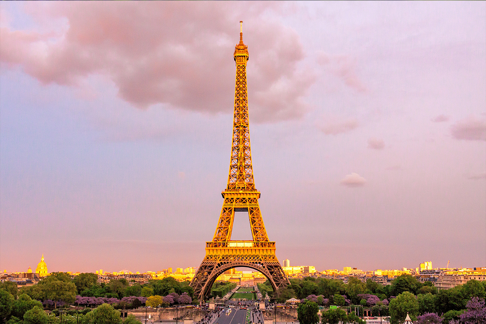

À propos de la Tour Eiffel
Conception et Construction
• 1884 : Gustave Eiffel, ingénieur et entrepreneur, avec ses collaborateurs Maurice Koechlin et Émile Nouguier,propose un projet audacieux pour l'Exposition universelle de 1889,
qui célèbre le centenaire de la Révolution française.
Leur idée est une tour de fer de 300 mètres de haut.
• 1887-1889 : La construction débute en janvier 1887 et s'achève en mars 1889.
Elle mobilise plus de 300 ouvriers et utilise environ 18 000 pièces
de fer assemblées par plus de 2,5 millions de rivets.
Caractéristiques Techniques
• Hauteur actuelle : 330 mètres (avec ses antennes).• Peinture : Elle est repeinte environ tous les 7 ans
pour la protéger contre la rouille.
• Éclairage : Chaque soir, 20 000 ampoules illuminent
la tour, créant un spectacle féerique.

Le Symbole de Paris et de la France
• Bien que la Tour Eiffel ait été critiquée à ses débuts, elle est rapidement devenue un symbole national.• Elle attire aujourd'hui plus de 7 millions de visiteurs par an, ce qui en fait le monument payant
le plus visité au monde.